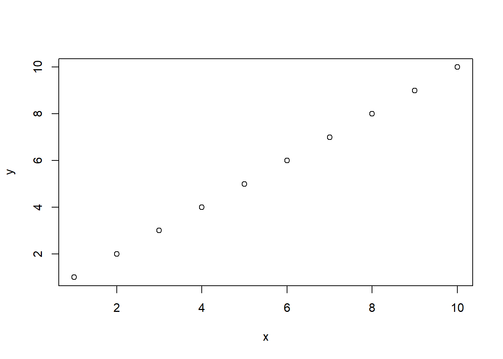

进入初中，孩儿要学一些关于函数的东西，这里用R语言进行一些演示，希望能够帮助孩子理解。
x = 1:10
y = 1:10
plot(x,y) 
lx <- seq(1, 5, length = 41)
yl <- expression(e^{-frac(1,2) * {log[10](x)}^2})
y <- exp(-.5*lx^2)
op <- par(mfrow = c(2,1), mar = par("mar")-c(1,0,2,0), mgp = c(2, .7, 0))
plot(10^lx, y, log = "xy", type = "l", col = "purple",
main = "Log-Log plot", ylab = yl, xlab = "x")